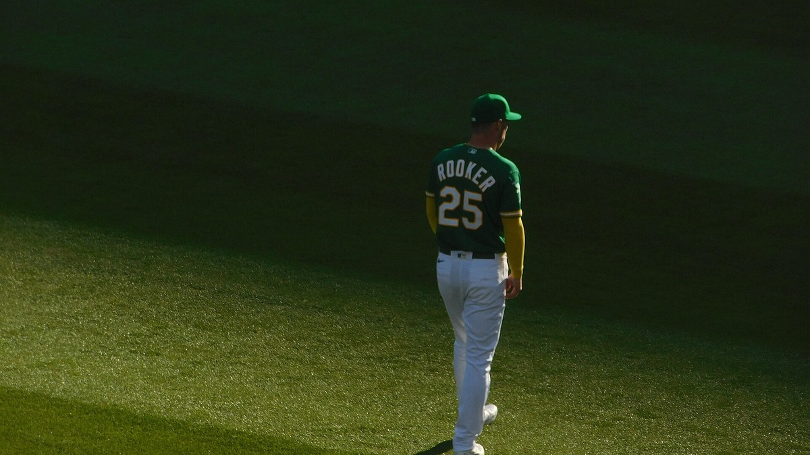

A's Injury Report
Who is on the injured list, who is day to day, and when each one is expected back for the A's, kept current all year at this one address.

The A's play in Sacramento now, but they are still the A's to a lot of us. Every player on their injury report is here with his position, the injury, his status, when he is expected back and when it last changed. It refreshes several times a day, so the link never changes.
The current report
Updated Fri, Nov 13, 10:35 AM Pacific. 12 on the injured list or out, 0 day to day. Next game: at Pittsburgh Pirates, Wed, Mar 24.
| Player | Pos | Injury | Status | Expected back | Last update |
|---|---|---|---|---|---|
| Max Muncy | 3B | Knee, surgery, left | Out | Spring training | Mon, Oct 26 |
| Ryan Lasko | CF | Neck, surgery | Out (60 day IL) | Spring training | Mon, Jul 27 |
| Brent Rooker | DH | Knee, surgery, left | Out | Spring training | Mon, Nov 2 |
| Tyler Soderstrom | LF | Hip, surgery, left | Out | Spring training | Mon, Nov 2 |
| Wei-En Lin | P | Elbow, surgery, left | Out | About 10 months (est. Sep 2027) | Tue, Nov 3 |
| Justin Sterner | RP | Knee, surgery, right | Out | Spring training | Mon, Nov 2 |
| Seth Johnson | RP | Knee, surgery, left | Out | Spring training | Mon, Oct 5 |
| Gunnar Hoglund | SP | Hip, surgery, left | Out | Spring training | Mon, Nov 2 |
| Jamie Arnold | SP | Face, fracture | Out | Spring training | Wed, Sep 9 |
| Jacob Wilson | SS | Shoulder, surgery, left | Out | Spring training | Mon, Nov 2 |
| Leo De Vries | SS | Shoulder, surgery, right | Out | 8 months (reported Nov 3) | Tue, Nov 3 |
| Shotaro Morii | SS | Undisclosed | Out (7 day IL) | Spring training | Mon, Aug 31 |
Quick answers
Who is out for the A's right now?
As of Fri, Nov 13: Leo De Vries (out), Wei-En Lin (out), Gunnar Hoglund (out), Justin Sterner (out), Jacob Wilson (out), Tyler Soderstrom (out), Brent Rooker (out), Max Muncy (out) and 2 more.
Who is questionable or day to day for the A's?
As of Fri, Nov 13: Shotaro Morii (day to day) and Ryan Lasko (day to day).
When is Leo De Vries expected back?
8 months (reported Nov 3). He is listed as out (shoulder, surgery, right), last updated Tue, Nov 3.
When is Wei-En Lin expected back?
About 10 months (est. Sep 2027). He is listed as out (elbow, surgery, left), last updated Tue, Nov 3.
When is Gunnar Hoglund expected back?
Spring training. He is listed as out (hip, surgery, left), last updated Mon, Nov 2.
When is Justin Sterner expected back?
Spring training. He is listed as out (knee, surgery, right), last updated Mon, Nov 2.
How to read it
Out means he is on the injured list or otherwise unavailable. The injured list comes in a 10 day version for position players, a 15 day version for pitchers, a 7 day concussion list, and a 60 day list that also takes him off the 40 man roster. Day to day means a minor problem, decided game by game. Over the winter the list stays up with the players rehabbing for spring.
Expected back is the latest timeline we can stand behind. When the update names one, like six weeks or two to three weeks, it shows here in plain numbers with the date it was reported. When it does not, you see the estimated return date carried on the league report, marked est. Timelines move, and this page moves with them. If nothing has been reported, it says no timeline yet. Practice participation is not shown: if the feed does not report it, we do not guess at it.
Where the numbers come from
Status, designation and injury come from the league injury report as published through ESPN, read automatically. Nothing in the tables is typed in by hand. When the team announces something the feed has not caught yet, it shows up here on the next refresh, usually within a few hours. See our editorial standards and corrections policy.
Our A's injury coverage
- The A's Finished 64 and 98, the Kids Are Hurt, and I'm Still Checking the Box Score
- Jack Perkins Threw Six and Two Thirds Scoreless and They Lost Anyway
- The A's Lost Their Whole Middle of the Order and Are Playing Their Best Baseball of the Year
- The A's Have Five Hitters on the IL and deGrom Just Made the Leftovers Look Like a Rehab Start
- Twins 11, Athletics 8: Down 7-0 Before Springs Left Hurt, and the Hole Was Just Too Deep
For more, see A's roster and depth chart and what 2027 looks like.
Every Bay Area injury report
Every Bay Area team · 49ers · Raiders · Warriors · Giants · Sharks